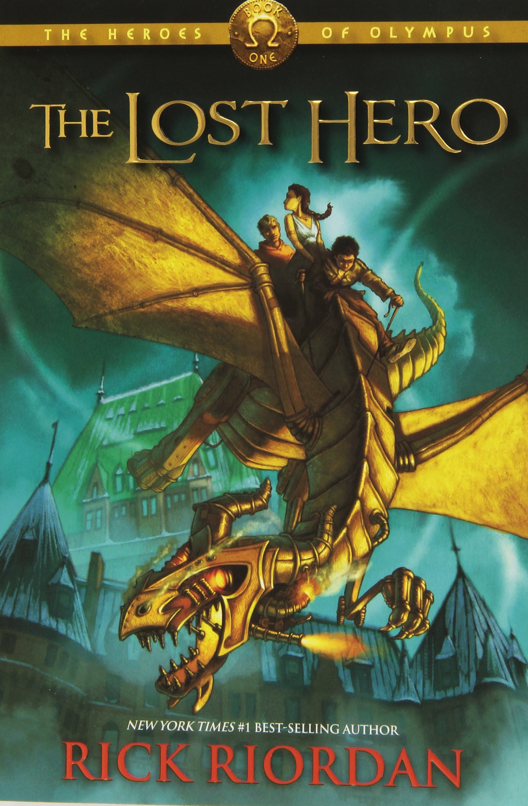

Reading Long Series
Besides watching anime and reading manga, I love reading long fiction novels. Here are some of the series I've finished of:
The Inheritance Cycle by Christopher Paolini
The Pendraon Series by D.J Machale
Harry Potter Series by J.K Rowling
Percy Jackson and the Olympians by Rick Rordan

The Heroes of Olympus by Rick Rordan
Hunger Games Series by Suzanne Collins

Drawing Anime
I used to love drawing and writing stories. So one day I decided to adventure into drawing anime. I could sketch basic stuff, but never had the courage to color them. Here are a few images. Ignore the rotated Naruto.


Video Games
I've always enjoyed playing videos games ever since I was required to use a computer for school work. The games I play vary from competitive shooting games like Rainbow Six Siege to adventure type games like Subnautica. Here are a few others:
- Rainbow Six Siege
- League of Legends
- Tomb Raider Series
- Monster Hunter World
- Stardew Valley
- Pokemon Let's Go
- Subnautica
- Etc...
Pokemon Go
I have to admit, I was never a fan of pokemon. I was a digimon fan all the way, but catching and collecting pokemon has become really fun. I started two days after the game came out because a friend of mine was playing and so to spend more time with them, I decided to start it up. Now I'm really dedicated to catching them all. Add me for gifts, raiding, and trading: